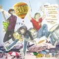
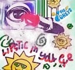

✖
Home
Discography
Concerts
Merch
Band
Quiz
Our Discography
<a href="http://thecoreys.bandcamp.com/album/10th-anniversary">10th Anniversary by The Coreys</a>
<a href="http://thecoreys.bandcamp.com/album/-">Για Πανκ Ενδεχόμενο by The Coreys</a>
Download for FREE

